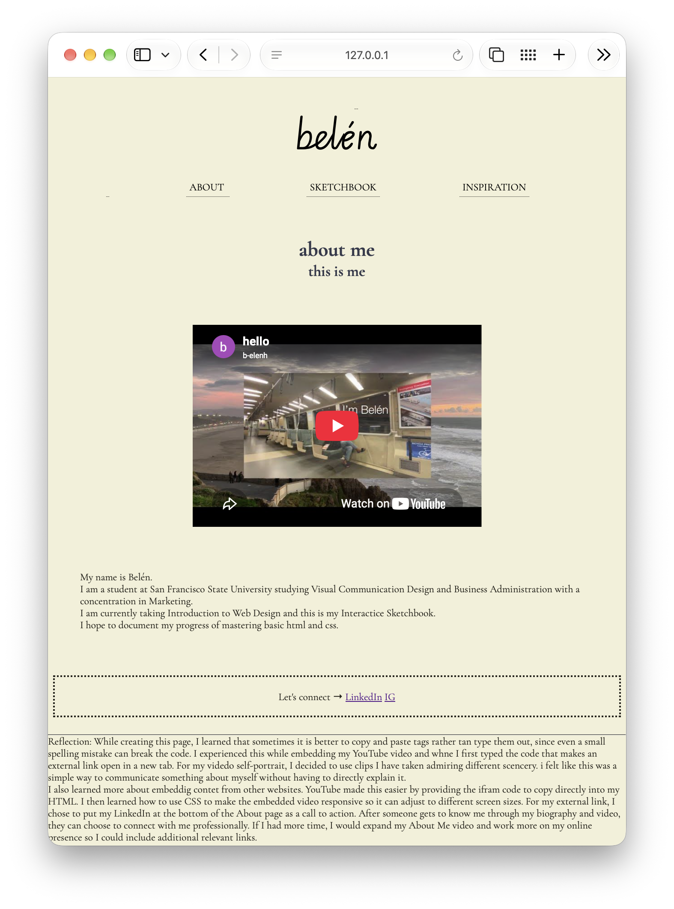
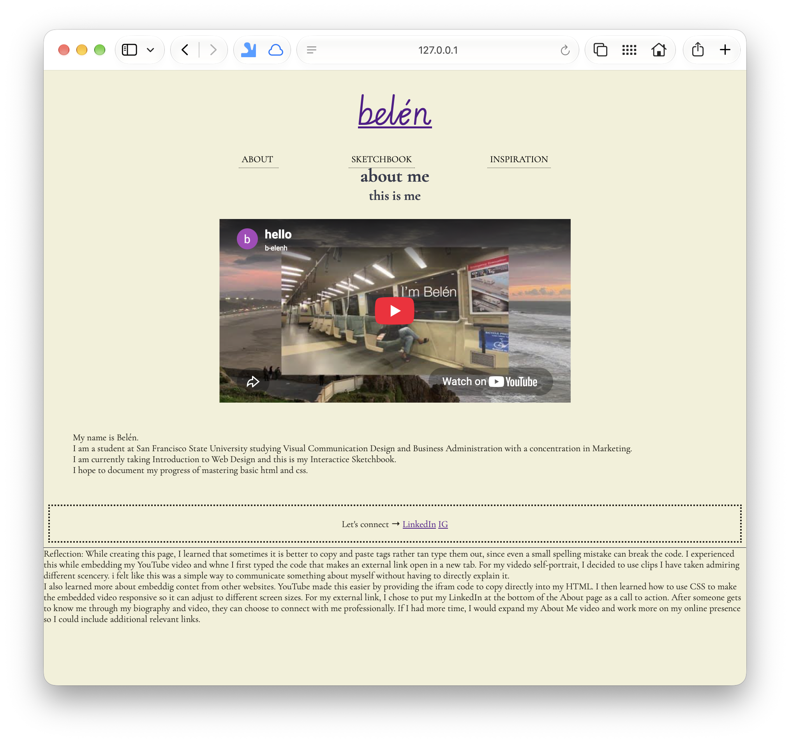
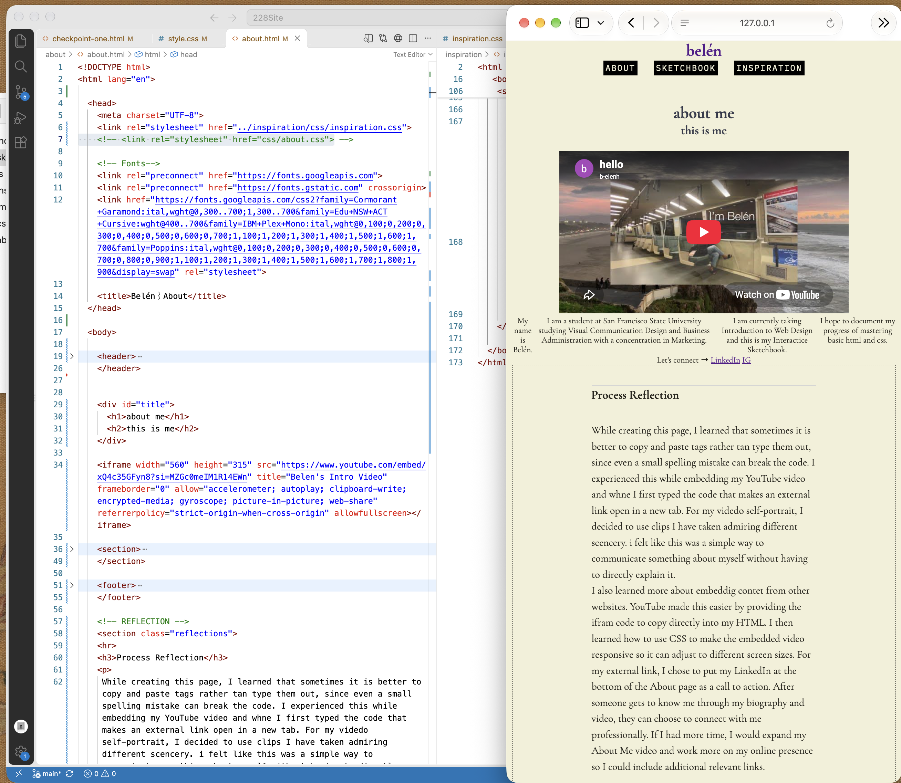
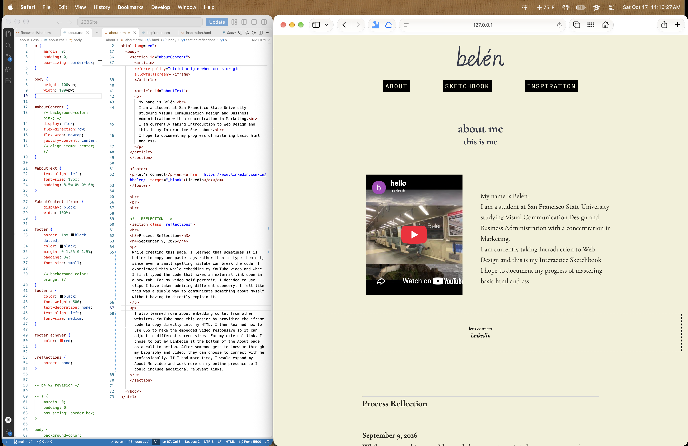

My name is Belén.
I am a student at San Francisco State University studying Visual Communication Design and Business Administration with a concentration in Marketing.
I am currently taking Introduction to Web Design and this is my Interactice Sketchbook.
I hope to document my progress of mastering basic html and css.
Revisiting my About page made me realize how much my understanding of HTML organization has changed. When I first created it, I thought I had done a pretty good job with what I knew at the time. However, looking back at my code, I noticed that I had used a lot of br tags to create spacing and hadn't given much thought to organizing my reflection. I treated the reflection as something separate that didn't necessarily need styling because it was “just for us.” Now I realize that the reflections are what make this website an Interactive Sketchbook, so I want them to feel like part of the design.

Original About page before revisiting its HTML structure and styling.
As I removed the unnecessary line breaks and started reorganizing my HTML, everything became compacted together, almost like a hamburger. I referred back to the HTML structure of my revised Inspiration page to help me figure out how to organize the content into sections and articles. I also found myself writing out the parent-child relationships before attempting Flexbox because I was having trouble visualizing how everything should fit together.

Removing the break tags revealed how much I had relied on HTML to create spacing between elements
My goal was to have my video and biography side by side. I placed them inside two article elements within a parent and started experimenting with widths, margins, padding, and justify-content. However, nothing seemed to work the way I expected.
After spending so much time trying to figure out what was wrong with my Flexbox, I realized that my HTML was still linked to the Inspiration page's stylesheet and my local about.css was commented out! I had been making changes to a stylesheet that the browser wasn't even reading.

Troubleshooting my About page after discovering that it was still using the Inspiration stylesheet instead of its own CSS.
Once I corrected the stylesheet link, I could finally see how my changes affected the layout. I continued experimenting with the spacing and alignment until the video and biography sat comfortably beside each other. I also reorganized my reflection so it had its own section and felt more connected to the rest of the page.

Experimenting with Flexbox properties to position the video and biography side by side.
Looking back at my original About page, I can see how differently I approach HTML and CSS now. Before, I was mainly focused on getting the content to appear on the page. Now I'm thinking more carefully about how elements are grouped, how they relate to one another, and how CSS can control their layout.
I'm happy with how the page turned out, although I still need practice understanding how widths, margins, and padding work together in Flexbox.
While creating this page, I learned that sometimes it is better to copy and paste tags rather than to type them out, since even a small spelling mistake can break the code. I experienced this while embedding my YouTube video and whne I first typed the code that makes an external link open in a new tab. For my video self-portrait, I decided to use clips I have taken admiring different scencery. I felt like this was a simple way to communicate something about myself without having to directly explain it.
I also learned more about embedding contet from other websites. YouTube made this easier by providing the iframe code to copy directly into my HTML. I then learned how to use CSS to make the embedded video responsive so it can adjust to different screen sizes. For my external link, I chose to put my LinkedIn at the bottom of the About page as a call to action. After someone gets to know me through my biography and video, they can choose to connect with me professionally. If I had more time, I would expand my About Me video and work more on my online presence so I could include additional relevant links.